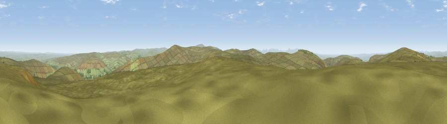

Viewpoint near Slaggyford
#4796 in England · top 11% of its area beats it · near Slaggyford · open accessWhere it is
The exact computed spot (NY 63412 51425). Click the marker for map links.
Public access: this spot lies on mapped open-access land (CRoW Act 2000) — you may roam here on foot. Computed from Natural England's CRoW access layer and OpenStreetMap rights of way — not the legal definitive map. Always verify locally.
The view, rendered

A 360° render of this exact spot computed from the terrain model, tree cover and land cover — summer colours, afternoon light, calibrated against photographs of famous viewpoints. Real trees, hedges and buildings will differ in detail.
The panorama
Grey silhouette: terrain skyline in each direction (720 bearings, Earth curvature and refraction included). Dashed green: skyline with trees (+15 m) and buildings (+8 m) as obstacles. Blue strip: how far the ground is visible on each bearing.
Where the view opens
Wedge length = distance to the farthest visible ground on that bearing (vegetation-aware). Rings at 10, 25 and 50 km.
What fills the view
97% grassland · 3% woodland
Angular shares of the visible panorama (visual magnitude), not map area. Landscape diversity 0.07 (0–1 Shannon).
Key numbers
More beautiful places nearby
The staircase of upgrades: each row has a higher view potential than everything closer. Driving times are estimates from straight-line distance, calibrated against real road routing — check an actual route before setting out.
| Place | Direction | Drive | Score |
|---|---|---|---|
| Viewpoint near Slaggyford | NNW · 2 km | ~6 min | 73.7 |
| Viewpoint near Cumrew | WSW · 4 km | ~10 min | 75.8 |
| Viewpoint near Cumrew | WSW · 5 km | ~11 min | 77.2 |
| Viewpoint near Cumrew | W · 8 km | ~15 min | 78.8 |
| Barrock Fell | WSW · 17 km | ~30 min | 81.1 |
| Viewpoint near Watermillock | SSW · 35 km | ~53 min | 82.6 |
| Viewpoint near Watermillock | SSW · 35 km | ~54 min | 83.5 |
| Skiddaw South Top | WSW · 44 km | ~64 min | 85.8 |
54.85627, -2.57144 · source: screening · position refined by local search. Computed location — check access rights before visiting.